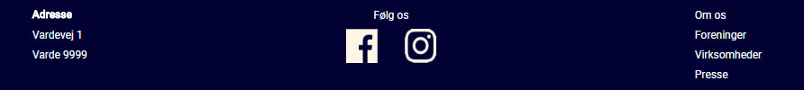

Footer
HTML
<footer class="bg-blue"> <div class="flex space content font-white"> <div> <h6 class="margin-t-10 bold">Adresse</h6> <h6 class="margin-t-10">Vardevej 1</h6> <h6 class="margin-t-10">Varde 9999</h6> </div> <div class="flex-column middle"> <h6 class="margin-t-10">Følg os</h6> <div class="flex space some margin-t-10"> <a href="https://www.facebook.com/kulturugen/"></a> <a href=""></a> </div> </div> <div> <h6 class="margin-t-10"><a href="om.html">Om os</a></h6> <h6 class="margin-t-10"><a href="til-foreninger.html">Foreninger</a></h6> <h6 class="margin-t-10"><a href="til-virksomheder.html">Virksomheder</a></h6> <h6 class="margin-t-10"><a href="presse.html">Presse</a></h6> </div> </div> </footer>
CSS
/* Footer */ footer{ height: 100px; width: 100%; } .some{ width: 100px; } .some-logo{ width: 35px; height: 100%; } CSS'en er i forvejen implententeret i koden. Der gøres brug af blandt andet flex box oven i overstående kode.
Kodeforklaring
Kopir overstående kode ind i dokumenter lige nedenunder section tagget.
Billedeksempler

Tilbage